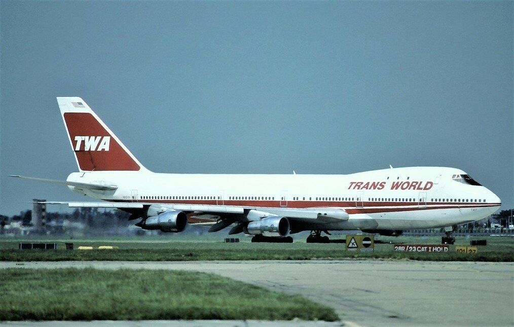
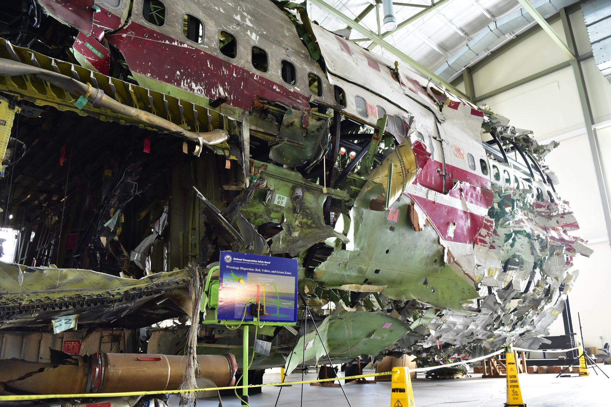
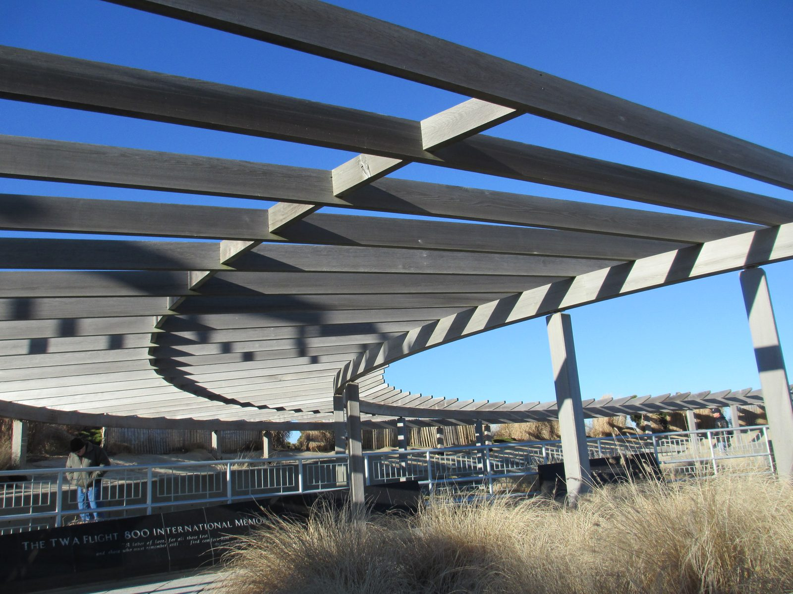

Twelve minutes after leaving New York on a clear summer evening, a Boeing 747 came apart at 13,760 feet and fell into the Atlantic in front of an entire coastline of people. Two hundred and thirty died. Hundreds of witnesses said they saw something rise off the water toward it first. Four years and the largest investigation in American aviation history later, the official answer was a fuel tank and a spark — and a significant number of people, including some who worked the case, have never accepted it.
All times are Eastern Daylight Time, the local time in New York.

TWA 800 was the evening Paris run: New York Kennedy to Charles de Gaulle, continuing to Rome. On the evening of Wednesday, July 17, 1996, it carried 212 passengers and 18 crew — 230 people. Among them were sixteen members of a high school French club from Montoursville, Pennsylvania, and five of their chaperones, flying to France for a trip they had spent two years raising money for.
The aircraft was a Boeing 747-131, registration N93119, delivered to TWA in 1971. It was twenty-five years old, which is unremarkable for a 747. It had been sitting on the ground at JFK for several hours in July heat, with its air conditioning packs running beneath the centre wing fuel tank. That detail, ordinary as it sounds, becomes the whole case.
Departure was delayed about an hour. Flight 800 lifted off runway 22R at 8:19 p.m. into clear evening air, turned east, and climbed out over Long Island toward the ocean.
At 8:31:12 p.m., twelve minutes after takeoff, the flight data and voice recorders stopped in the same instant. The last thing on the cockpit voice recorder is an unremarkable crew exchange and then a fraction of a second of noise.
Flight 800 takes off about an hour behind schedule, climbing east over Long Island in clear weather with excellent visibility — the reason so many people on the ground and on boats would see what happened next.
Boston air traffic control clears the flight to 15,000 feet. The crew acknowledges. It is the last transmission from the aircraft.
Both black boxes cease in the same instant. The forward fuselage — the nose section, the cockpit, the first-class cabin — separates from the rest of the aircraft.
Without the weight of its nose, the remainder of the 747 pitches up sharply and continues climbing, on fire, to somewhere between 15,500 and 16,700 feet before rolling over and falling. This is the detail on which the entire dispute turns. See The Witnesses.
The wreckage falls into the Atlantic about eight miles south of East Moriches, Long Island. Nobody aboard survives. Boats in the area reach burning debris on the surface within minutes.
It was visible for a hundred miles. On a clear July evening, along one of the most densely populated coastlines in the United States, tens of thousands of people were outdoors and looking at the sky.
— Why this became the most-witnessed air disaster in historyThis is the part of the case that will not go away, and it deserves to be handled precisely rather than loosely. Here are the actual numbers.
Investigators gathered 736 witness accounts, an extraordinary number for any aviation accident. Of those, 258 people described seeing a streak of light before or at the moment of the explosion. Of that group, 38 described the streak as ascending vertically, or very nearly so — rising off the horizon, off the water, going up.
Those are not fringe numbers and they were never treated as fringe by the investigation. They were treated as the central problem to be explained. Witnesses included fishermen, people on beaches and decks, pilots of other aircraft in the area, and members of a New York Air National Guard helicopter crew who were airborne nearby. These were not, as a group, people prone to misidentifying things in the sky.
The streak of light reported by most of these witnesses was burning fuel from the accident airplane in crippled flight during some portion of the post-explosion, pre-impact breakup sequence.
— NTSB Witness Group, on what the 258 accounts describeThat is the official explanation, and it is not a dismissal — it is a specific, testable claim. It says that what people saw rising was the aircraft itself: the crippled 747, minus its nose, streaming burning fuel and climbing more than two thousand feet before it fell. On that reading, the witnesses saw something real and rising. They simply saw it after the explosion rather than before, and misremembered the order under the shock of what followed.
Whether that explanation is adequate is the argument that has run for thirty years.
Two agencies with very different jobs ran parallel investigations into the same wreckage, and the friction between them is a large part of why this case still generates suspicion.
The National Transportation Safety Board is a civil agency with no police powers whose entire remit is finding out why aircraft break, so that they stop breaking. It ran the accident investigation. Its final report was adopted on August 23, 2000 — four years and a month after the crash, the longest investigation in the agency's history at that point.
Simultaneously, the FBI opened a parallel criminal investigation on the working assumption that a 747 exploding off New York might be terrorism — four months after the Olympic Park bombing, in a summer already braced for it. At its peak the FBI had around 80 agents a day taking witness statements. Sixteen months in, having found no evidence of a criminal act, it closed the active criminal case.
Both of those decisions were defensible on their own terms. Together they created a problem that has never fully gone away: for sixteen months, the agency holding most of the witness statements was a law-enforcement body running a criminal case, not the safety board trying to explain the physics. The NTSB did not get full access to the FBI's witness summaries until February 1998 — roughly eighteen months after the crash, and well after the investigation's early public narrative had set.
If you want to understand why so many reasonable people came away from this case uneasy, you do not need a conspiracy. You need only that sequence of events, which is a matter of public record.
The wreckage lay on the seabed off Long Island. Navy divers, trawlers, remotely operated vehicles and scallop dredges worked it for months. In the end more than 95% of the aircraft came back up.
What was recovered was trucked to a leased hangar at a former Grumman plant in Calverton, Long Island, and rebuilt. Investigators reassembled the forward fuselage on a steel frame, piece by numbered piece, until they had a physical, three-dimensional model of how the aircraft had come apart.
It is one of the most complete reconstructions ever attempted, and it is the reason the physical findings in this case are unusually strong. Investigators were not reasoning from fragments. They could walk around the break.
The reconstruction later moved to the NTSB's training centre in Ashburn, Virginia, where it was used to teach accident investigators for about twenty years. It was decommissioned in 2021 at the request of victims' families.

That distribution is the strongest physical evidence in the case, and it cuts in a particular direction. The pieces that separated earliest were the ones from the front of the aircraft, forward of the wing. Whatever happened, happened there — at the centre wing fuel tank, which sits in the belly between the wings just aft of the forward cabin. It did not happen at a wing, or an engine, or the tail, which is where a missile detonating near the aircraft would most plausibly have done its damage. No wreckage recovered showed the pitting, penetration or explosive residue signature that a warhead leaves.
The NTSB adopted its final report on August 23, 2000. The probable cause statement is worth reading in full, because what it actually says is more careful than how it is usually summarised.
An explosion of the center wing fuel tank, resulting from ignition of the flammable fuel/air mixture in the tank. The source of ignition energy for the explosion could not be determined with certainty, but, of the sources evaluated by the investigation, the most likely was a short circuit outside of the CWT that allowed excessive voltage to enter it through electrical wiring associated with the fuel quantity indication system.
— National Transportation Safety Board, Probable Cause, NTSB/AAR-00/03Note what the Board did and did not say. It said, with confidence, that the centre wing tank exploded. It said, explicitly, that the ignition source could not be determined with certainty — and then named the most likely candidate among those it had examined. That is an unusually candid probable cause, and it is a long way from the popular shorthand of “faulty wiring did it.”
The centre wing tank held only about 50 gallons of fuel — a residual splash in a tank built to hold thousands, which meant the space above it was overwhelmingly fuel vapour rather than liquid. The aircraft had sat on a hot July ramp for hours with the air conditioning packs running directly beneath that tank, heating the vapour above it. The Board's testing established that the mixture in the tank at the moment of the explosion was flammable.
The fuel quantity indication system runs low-voltage wiring into the tank to measure fuel level. Those wires share bundles and connectors with much higher-voltage aircraft wiring. The Board's theory is that damaged insulation somewhere allowed voltage to cross over and travel into the tank on wiring that was never supposed to carry it.
Centre wing tank explosions were not hypothetical. The NTSB pointed to earlier fuel tank explosions on other aircraft, including Philippine Airlines Flight 143, whose centre tank blew up as it pushed back from the gate in Manila. The failure mode described here was a known category of risk, not one invented to close this case.
The finding drove sweeping change: fuel tank flammability rules, wiring inspection and maintenance requirements, and ultimately the fuel tank inerting systems now fitted across the fleet, which pump nitrogen-enriched air into tanks to keep the vapour below the level at which it can burn at all.
Set out plainly, without either endorsement or sneering, here is the case that something struck TWA 800 — and here is what the investigation put against each part of it.
The single strongest argument. A quarter of all witnesses described a streak of light, and 38 said it went up. Several were experienced observers. Some have never wavered in thirty years of retelling.
The physical evidence establishes that the 747 lost its nose and then climbed, burning, for roughly another 3,000 feet. Something genuinely did rise and burn in that sky. The dispute is over whether witnesses could have inverted the sequence in memory — which is a documented and well-studied effect — or whether hundreds of people all got the order wrong.
There were military vessels and warning areas off Long Island, and the theory that TWA 800 was hit by an errant missile during an exercise took hold quickly — most prominently in a 1996 essay by former press secretary Pierre Salinger, who said he had documents proving it.
Salinger's source turned out to be an anonymous message that had been circulating online for months. The episode is now taught as a case study in credulous sourcing, and it did real damage — it attached the entire missile question to an embarrassment, which made it easier to wave away the witnesses who had nothing to do with it.
Traces consistent with explosive were detected on some recovered material, a fact that was reported at the time and is often cited as suppressed evidence.
The FBI established that this particular airframe had been used for an explosive-detection dog training exercise weeks earlier, which put trace explosive residue aboard by an entirely mundane route. Separately, no wreckage showed the physical damage — the pitting, penetration and blast pattern — that a warhead produces.
A missile that destroys an airliner leaves marks on the airliner. More than 95% of this one came back out of the ocean and was reassembled in a hangar. That is the hardest fact the missile theory has to get past.
— The central evidentiary problemThere is a difference between “the government lied about what destroyed this aircraft” and “the government handled this investigation in ways that damaged public trust.” The evidence for the second is much stronger than for the first, and conflating them has muddied this case for thirty years.
This is the strangest documented fact in the whole case, and it is not a rumour. On November 18, 1997, at the nationally televised press conference where it announced it had found no evidence of a criminal act and was closing its case, the FBI presented a video animation produced by the Central Intelligence Agency, depicting the aircraft's post-explosion climb and arguing that this is what the witnesses saw. An intelligence agency with no aviation-safety remit had produced the public explanation for a civil accident's most stubborn evidence. Critics have long argued the analysis was built to fit a conclusion rather than the other way round, and have pointed to the sequencing of the CIA's own internal work as evidence of that. Whatever one concludes, using the CIA as the public voice on witness testimony was a decision guaranteed to generate exactly the suspicion it generated.
Because it was running a criminal investigation, and that is what criminal investigators do with witness statements. But the practical result was that the safety board charged with explaining the accident did not have full access to the largest witness pool in aviation history until early 1998. The NTSB's own witness analysis therefore came late, after the public narrative had hardened in both directions.
Yes, and this is where the case earns its persistence. In 1999, Senate testimony from a former NTSB senior investigator raised concerns about security and handling of wreckage at the Calverton hangar. Allegations about the handling of specific pieces have been made by people who were physically present. Those allegations have been investigated and rejected officially. They have not been withdrawn by the people who made them.
This is the question that most often goes unasked. Concealing a missile strike would have required sustained silence from the NTSB investigative staff, the FBI, the Navy, Boeing, TWA, ALPA, the metallurgists who examined the wreckage, and the hundreds of civilian technicians who reassembled an aircraft in a hangar on Long Island — maintained for thirty years, through multiple changes of administration, with strong personal and financial incentives to break it. That is not proof of anything. But it is the weight the theory has to carry, and it belongs in the file alongside everything else.
Two hundred and thirty people. Sixteen of them were teenagers from one small Pennsylvania town, flying to France on a school trip.
The families of TWA 800 changed how the United States treats the relatives of air crash victims. Their advocacy in the months after the crash led directly to the Aviation Disaster Family Assistance Act of 1996, which made the NTSB responsible for coordinating family support after a major accident and imposed obligations on airlines about notification, information and the return of remains. Every family that has lost someone in a US aviation accident since has been dealt with under rules these families forced into existence out of their own experience of being handled badly.
The TWA Flight 800 International Memorial stands at Smith Point County Park on the Long Island barrier beach, facing the water where the aircraft came down. It was dedicated on July 14, 2002. A curved black granite wall carries the names of all 230, with a carving on the reverse of a wave releasing 230 gulls. A later addition holds victims' personal effects recovered from the sea.
The families are not a single constituency on the question of cause. Some accept the NTSB's finding entirely. Some have campaigned for years to have it reopened. Both groups lost the same people.

212 passengers · 18 crew
All of them named on the wall.
Pennsylvania · 16 students, 5 chaperones
A French club trip, two years in the saving.
Thirty years on, the official finding stands and a determined minority still rejects it. Here is precisely where that stands, with the numbers straight.
In June 2013, a petition was filed asking the NTSB to reopen the investigation, timed to a documentary co-produced by physicist Tom Stalcup. It was signed by a small group of people who had worked on or around the original inquiry — among them Hank Hughes, a former NTSB senior accident investigator; Bob Young, a former senior accident investigator for TWA; and Jim Speer, an accident investigator for the Air Line Pilots Association. They argued that radar and other evidence indicated an external detonation and that the probable cause was therefore wrong.
These are not anonymous cranks. They are people with genuine standing who were professionally close to the wreckage. That is precisely why the petition mattered and why it was reported seriously.
In July 2014 the NTSB denied the petition in its entirety, stating that the evidence and analysis presented did not show the original findings to be incorrect. The finding of August 23, 2000 remains the official cause of the loss of TWA Flight 800.
This is not seriously contested by anyone, including the petitioners. The tank blew up. More than 95% of the aircraft was recovered and reconstructed, and the break originated at the front of the aircraft where that tank sits. The argument is not about whether the tank exploded. It is about what set it off.
The NTSB itself said the ignition source could not be determined with certainty. That sentence is in the probable cause. The dissenters argue an external event is the better explanation for the initiating energy; the Board found the wiring hypothesis the most likely of those it evaluated and found no physical evidence of a warhead. Both of those statements are true at once, which is why the case never fully closes.
The honest position on TWA 800 is not “the official story is a lie,” and it is not “the witnesses were confused and that is the end of it.” It is that a tank everyone agrees exploded was set off by something the investigating agency openly admitted it could not identify with certainty — and that 258 people saw a light in the sky they have never stopped describing.
— Where this case actually restsWe have not told you what to think here, and we are not going to. What we can tell you is what the record contains: an exhaustive physical reconstruction that found no missile damage, an ignition source the Board could not pin down, a witness pool larger than any accident before or since, an intelligence agency in a role nobody has ever satisfactorily explained, and a handful of serious people who worked the case and still do not accept how it was closed.
Every fact in this case file was cross-referenced against at least two independent sources, anchored by the official government investigation. All links open in a new tab.
The National Transportation Safety Board's complete final report, including the probable cause, the witness group study, the wreckage dispersion analysis and the fuel tank flammability testing.
The Board's own statement denying the 2013 petition for reconsideration, and its reasoning.
The FBI's released case files on its parallel criminal investigation, available in full through the Bureau's public reading room.
CNN's report from the press conference at which the FBI closed its sixteen-month criminal investigation — and at which the CIA animation was presented to the public.
Coverage of the 2013 petition, naming the former investigators involved and reporting the NTSB's response.
Reporting on the documentary and petition that prompted the NTSB's 2014 review.
Used for the timeline, witness counts, recovery figures and memorial details, each cross-checked against the primary sources above.